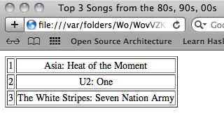

4 Quote & Unquote

Purpose: The purpose of this lab is to learn about "quote" and "unquote"
Textbook references:
Intermezzo 2: Quote, Unquote
Most of you didn’t finish the lab last week, so the beginning of this week is a continuation of last week:
Counters
Starter Code: Consider the following data definitions and functions:
(define-struct pair [element value]) (define Entry (signature [PairOf String Number])) ; represents an element with a count (define (pair-temp p) (... (pair-element p) ... (pair-value p) ...)) (define Counter [ListOf Entry]) ; and represents a multiset (a set of elements where ; an element can appear more than once) (define (counter-temp counter) (cond [(empty? counter) ...] [(cons? counter) (... (pair-temp (first counter)) ... (counter-temp (rest counter)) ...)])) (define marble-bag (list (make-pair "green" 2) (make-pair "red" 5))) ; marble-bag represents a bag with 2 "green" marbles and 5 "red" ones (: get (Counter String -> Number)) ; Get the count of the given element (define (get counter element) (cond [(empty? counter) (error "not found")] [else (if (counts-element? (first counter) element) (pair-value (first counter)) (get (rest counter) element))])) (check-error (get (list (make-pair "cats" 3)) "dogs") "not found") (check-expect (get (list (make-pair "cats" 3) (make-pair "dogs" 4)) "dogs") 4) (: counts-element? (Entry String -> Boolean)) ; Does the pair hold a count for the element? (define (counts-element? pair element) (string=? element (pair-element pair))) (check-expect (counts-element? (make-pair "green" 2) "green") #true) (check-expect (counts-element? (make-pair "red" 5) "blue") #false)
Sample Problem Design the function add-to-counter, which given a Counter and an element will add 1 to the previously associated count. If that element was not present, its count will be 1.
(: add-to-counter (Counter String -> Counter)) ; Add one to the count associated with element or set it to 1 ; if it hasn't been seen before (define (add-to-counter counter element) (cond [(empty? counter) (list (make-pair element 1))] [(cons? counter) (if (counts-element? (first counter) element) (cons (increment-value (first counter)) (rest counter)) (cons (first counter) (add-to-counter (rest counter) element)))])) (check-expect (add-to-counter '() "blue") (list (make-pair "blue" 1))) (check-expect (add-to-counter marble-bag "red") (list (make-pair "green" 2) (make-pair "red" 6))) (check-expect (add-to-counter marble-bag "green") (list (make-pair "green" 3) (make-pair "red" 5))) (: increment-value (Entry -> Entry)) ; Increment the value in pair (define (increment-value pair) (make-pair (pair-element pair) (add1 (pair-value pair)))) (check-expect (increment-value (make-pair "green" 2)) (make-pair "green" 3)) (check-expect (increment-value (make-pair "red" 5)) (make-pair "red" 6))
Exercise 1 Design the function total-size, which grabs the total count of elements in a Counter (there are 7 in marble-bag).
Exercise 2 Design the function initiate-counter, which given a String creates a Counter with one copy of that element. Be sure to follow the data definition.
Switch pair programming roles before continuing!
Exercise 3 Design the function all-elements, which outputs a ListOfString containing all of the elements a Counter has counted so far. For example, the output of (all-elements marble-bag) would be (list "green" "green" "red" "red" "red" "red" "red").
; Hint: Notice that every PosInt is also a Nat; this may be helpful.
Exercise 4 Design the function highest-count, which returns the highest count for a single element in a Counter. If the counter is empty, return 0.
Brief Aside on Mappings
Our Counter definition is actually a specialized version of a mapping. It’s a mapping from Strings to their counts; that is, it keeps track of a count for each individual String.
Mappings are everywhere in computer science, and most "real" programming languages will come with them baked-in (where they might also be called dictionaries, hash maps, associative arrays, etc.), along with functions that let you work with them. You’ll see more general and useful mappings very soon.
Quote and Unquote
Lists play an important role in this course as well as in Racket, the basis of our teaching languages.
For the design of programs, it is critical to understand how lists are constructed from first principles; it informs the creation of our programs. Routine work with lists calls for a compact notation, however, like the "list" function.
Since the late 1950s, Lisp-style languages have come with an even more powerful pair of list-creation tools: quotation and anti-quotation. Many programming languages support them now, and the PHP web page design language injected the idea into the commercial world. At this point, the idea underlies many of the mainstream Javascript frontend tools.
This lab gives you a taste of this quotation mechanism. It also introduces symbols, a form of data that is intimately tied to quotation.
Quote
Quotation is a short-hand mechanism for writing down a large list easily. Roughly speaking, a list constructed with the list function can be constructed even more concisely by quoting lists. Conversely, a quoted list abbreviates a construction with list.
Technically, quote is a keyword for a compound sentence and it is used like this: (quote (1 2 3)). DrRacket translates this expression to (list 1 2 3). At this point, you may wonder why we call quote an abbreviation because the quoted expression looks more complicated than its translation. The key is that ’ is a short-hand for quote. Here are some short examples, then:
> '(1 2 3) (list 1 2 3) > '("a" "b" "c") (list "a" "b" "c") > '(#true "hello world" 42) (list #true "hello world" 42)
So far quote looks like a small improvement over list, but look:
> '(("a" 1) ("b" 2) ("d" 4)) (list (list "a" 1) (list "b" 2) (list "d" 4))
With "'" we can construct lists as well as nested lists.
To understand how quote works, imagine it as a function that traverses the shape it is given. When ’ encounters a plain piece of data—a number, a string, a Boolean, or an image—it disappears. When it sits in front of an open parenthesis, (, it inserts list to the right of the parenthesis and puts ’ on all the items between ( and the closing ).
Quasiquote & Unquote
Let’s move on, then, to the actual surprises hidden behind quote. Suppose your definitions area contains one constant definition:
(define x 42)
Imagine running this program and experimenting with
'(40 41 x 43 44)
in the interactions area. What result do you expect? Stop! Try to apply the above rules of ’ for a moment.
At this point it is important to remember that DrRacket displays values. Everything on the list is a value, including 'x. It is a value you have never seen before, namely, a Symbol. For our purposes, a symbol looks like a variable name except that it starts with ’ and that a symbol is a value. Variables only stand for values; they are not values in and of themselves. Symbols play a role similar to those of strings.
Try a second example:
'(1 (+ 1 1) 3)
What do you expect that to construct? Did it surprise you? If so, review the rules for "quote" (Note: This is why we said at the beginning that "quote" is a keyword, not a function. This distinction is very important!)
What this means is that '+ is a symbol just like 'x. Just as the latter is unrelated to the variable "x", the former has no immediate relationship to the function +.
In some cases, you do not want to create a nested list. You actually want a true expression in a quoted list and you want to evaluate the expression during the construction of the list. For such cases, you want to use "quasiquote", which, like quote, is just a keyword for a compound sentence: (quasiquote (1 2 3)). And, like quote, quasiquote comes with a short-hand, namely the ‘ character, which is the "other" single-quote key on your keyboard.
At first glance, "`" acts just like "'" in that it constructs lists:
> `(1 2 3) (list 1 2 3) > `("a" "b" "c") (list "a" "b" "c") > `(#true "hello world" 42) (list #true "hello world" 42)
The best part about ‘ is that you can also use it to unquote, that is, you can demand an escape back to the programming language proper inside of a quasiquoted list. Let’s illustrate the idea with the above examples:
> `(40 41 ,x 43 44) (list 40 41 42 43 44) > `(1 ,(+ 1 1) 3) (list 1 2 3)
From here it is a short step to the production of web pages. Yes, you read correctly—web pages! In principle, web pages are coded in the HTML and CSS programming languages. But nobody writes down HTML programs directly; instead people design programs that produce web pages. Not surprisingly, you can write such functions in ISL too.
For example:
(define SExp (signature Any)) (: my-first-web-page (String String -> SExp)) ; produces a web page with given author and title (define (my-first-web-page author title) `(html (head (title ,title) (meta ((http-equiv "content-type") (content "text-html")))) (body (h1 ,title) (p "I, " ,author ", made this page."))))
Note: as an extra exercise, try turning the definition of a recursive SExp (S-expression) into a more precise signature for this function.
To turn this nested-list-with-symbols representation into corresponding HTML tags and display it, add
(require 2htdp/web-io)
To the top of your file and run:
(show-in-browser (my-first-web-page "Your Name" "Hello World"))
When quasiquote meets unquote during the expansion of short-hands, the two annihilate each other:
`(tr ,(make-row '(3 4 5)))
is short for
(list 'tr (make-row (list 3 4 5)))
Thus, whatever make-row produces becomes the second item of the list. In particular, if make-row produces a list, this list becomes the second item of a list. If make-row translates the given list of numbers into a list of strings, then the result is
(list 'tr (list "3" "4" "5"))
In some cases, however, we may want to splice such a nested list into the outer one, so that for our running example we would get
(list 'tr "3" "4" "5")
One way to solve this small problem is to fall back on cons. That is, to mix cons with quote, quasiquote, and unquote. After all, all of these characters are just short-hands for consed lists. Here is what is needed to get the desired result in our example:
(cons 'tr (make-row '(3 4 5)))
Convince yourself that the result is
(list 'tr "3" "4" "5")
|
,@ |
`(tr ,@(make-row '(3 4 5)))
translates into
(cons 'tr (make-row '(3 4 5)))
'(table ((border "1")) (tr (td "1") (td "2") (td "3") (td "4")) (tr (td "2.8") (td "-1.1") (td "3.4") (td "1.3")))
The first nested lists tells HTML to draw a thin border around each cell in the table; the other two nested lists represent a row each.
Exercise 5 Design a function that translates lists of numbers into a table row.
Exercise 6 Design a function that, given two lists of numbers, produces a table with borders around the cells and two rows.
Switch pair programming roles before continuing!
Exercise 7 Now design a function that takes a list of lists of numbers and produces a table with an arbitrary number of rows.
Exercise 8 Create the function make-ranking, which consumes a list of ranked song titles and produces a list representation of an HTML table. The table should look something like the following, if displayed with "show-in-browser".

Hint Although you could design a function that determines the rankings from a list of strings, we wish you to focus on the creation of tables instead. Thus we supply the following functions:
(define (ranking los) (reverse (add-ranks (reverse los)))) (define (add-ranks los) (cond [(empty? los) '()] [else (cons (list (length los) (first los)) (add-ranks (rest los)))])) Before you use these functions, equip them with signatures and purpose statements. Then explore their workings with interactions in DrRacket. We’ll see later how to simplify the design of functions like this with accumulators.